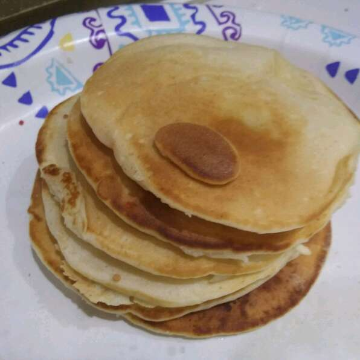

Pancakes

This is a recipe to make the finest pancakes known to mankind!
This is my go-to recipe for making pancakes each morning. It gets my day started right every time.
Ingredients
- 1 ¼ cups all-purpose flour
- ¼ cup white sugar
- 1 teaspoon baking powder
- 1 pinch salt
- 1 egg
- 1 ¼ cups buttermilk
- ¼ cup vegetable oil
Steps
- Heat a lightly oiled griddle or frying pan over medium high heat.
- In a large bowl, combine flour, sugar, baking powder and salt.
- Stir in egg, buttermilk and oil until mixture is smooth.
- Pour the batter by spoonfuls into the hot pan, forming 5 inch circles.
- When the edges appear to harden, flip the pancakes.
- Cook on both sides until golden brown. Serve hot.